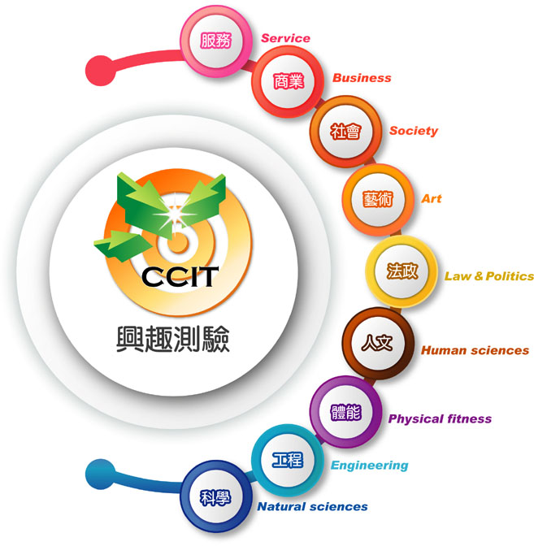

-
- 測驗內容
- 電腦化生涯興趣測驗—大學版之測驗向度乃依據本土研究結果與大學之學門學類分析，擴充測驗內涵，並結合資訊技術與新式計量方法， 以期提升測驗效度，共分為商業、法政、服務、藝術、社會、體能、工程、科學、人文等9大類興趣類型。

-
- 測驗方式與時間
- 電腦化生涯興趣測驗—大學版需在有網路的環境下進行施測，詳細電腦環境規格，請參照申請條件。 本測驗施測時間為20~25分鐘。
-
- 測驗結果報表
- 本測驗為電腦化自動計分，學校管理者於系統申請後，一周內以e-mail通知學校管理者報表製作完成，教師可瀏覽網頁版報表或自行於系統中下載受試者報表（PDF檔）以及班級學生總表（Excel檔）。
-
- 施測資訊
- 凡公、私立大專院校之學校輔導單位，皆具有申請和購買資格。詳細說明，請參照使用流程說明。
-
- 線上施測價格
- 本測驗系統於推廣期間，免費提供各公、私立大專院校使用。